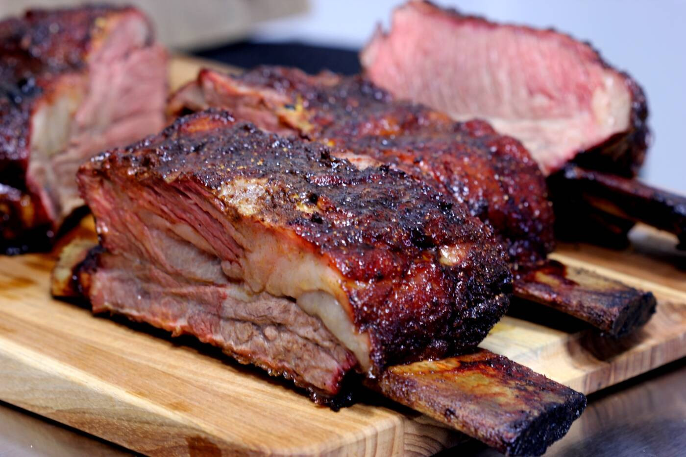

This BBQ ribs recipe may be different than others you've tried, but for super tender ribs, give it a try! Country-style pork ribs are boiled in seasoned water until tender, then finished up in the oven under a blanket of your favorite barbecue sauce as they bake to perfection.
Make the perfect ribs without the grill using this tasty BBQ ribs recipe. All you need is a handful of simple ingredients and your oven to create tender, flavorful ribs with minimal effort. Slow baking ensures the meat stays juicy and cooks until perfectly tender, while the barbecue sauce caramelizes into a rich, sticky coating.